Jogos Confirmados para 2025
1. Grand Theft Auto VI (Rockstar Games)
Plataformas: PS5, Xbox Series X/S (PC possivelmente mais tarde)
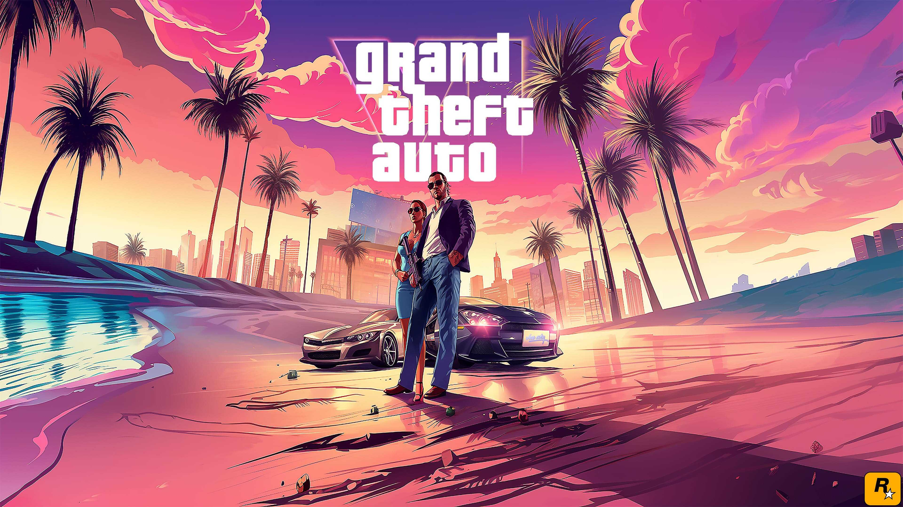
O jogo mais aguardado da década, com um retorno a Vice City e um mundo aberto ainda mais expansivo.
2. The Elder Scrolls VI (Bethesda)
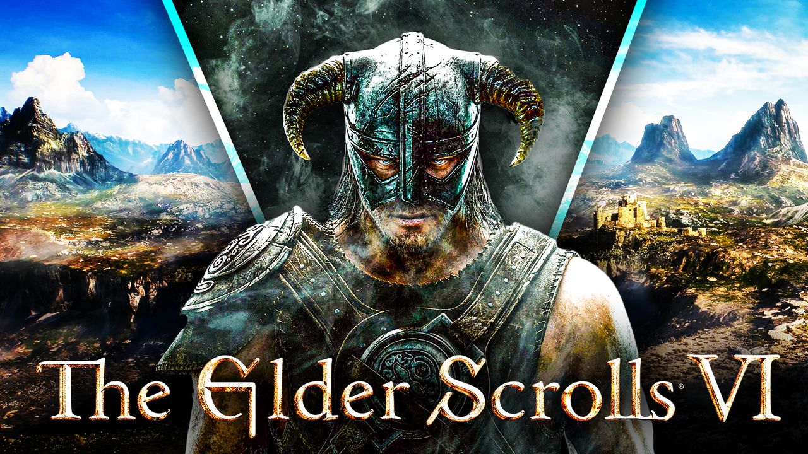
Plataformas: Xbox Series X/S, PC (possivelmente exclusivo temporário)
O próximo capítulo da aclamada série de RPGs de mundo aberto, com gráficos de última geração.
3. Marvel’s Blade (Arkane Studios / Bethesda)
Plataformas: PC, Xbox Series X/S
 Um jogo de ação e vampiro em primeira pessoa, desenvolvido pelos criadores de Dishonored e Deathloop.
4. Fable (Playground Games / Xbox Game Studios)
Plataformas: Xbox Series X/S, PC
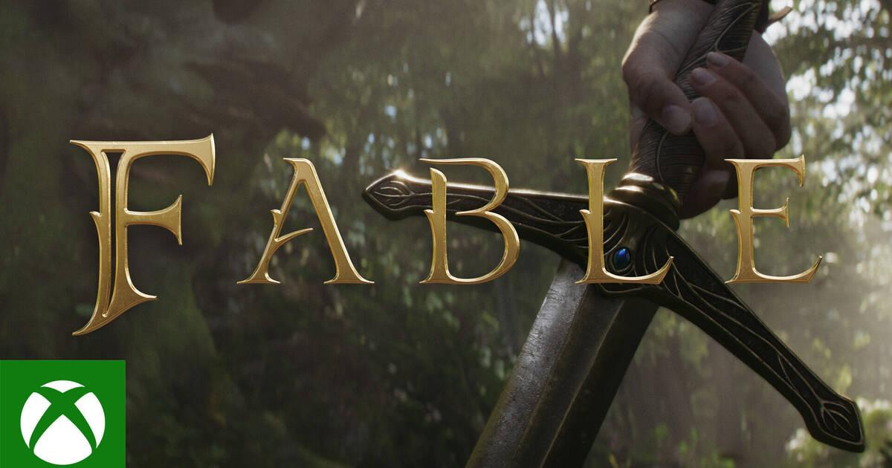
O reboot da clássica série de RPG com um toque de humor e mundo aberto fantástico.
5. Death Stranding 2 (Kojima Productions)
Plataformas: PS5
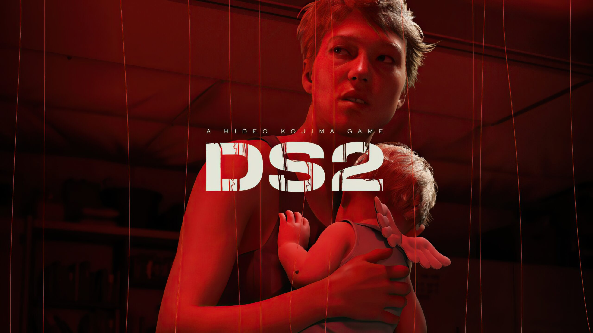
A sequência do aclamado jogo de Hideo Kojima, com mais mistério, ação e conexões sociais.
6. Dragon Age: Dreadwolf (BioWare / EA)
Plataformas: PS5, Xbox Series X/S, PC
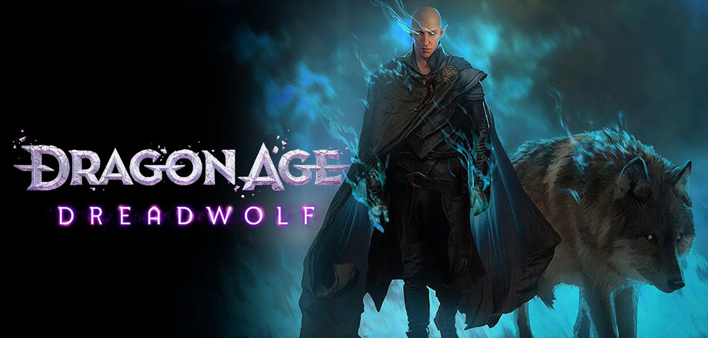
O retorno da série de RPG de fantasia da BioWare, focado em escolhas impactantes e combate tático.
7. Star Wars: Eclipse (Quantic Dream)
Plataformas: PS5, Xbox Series X/S, PC
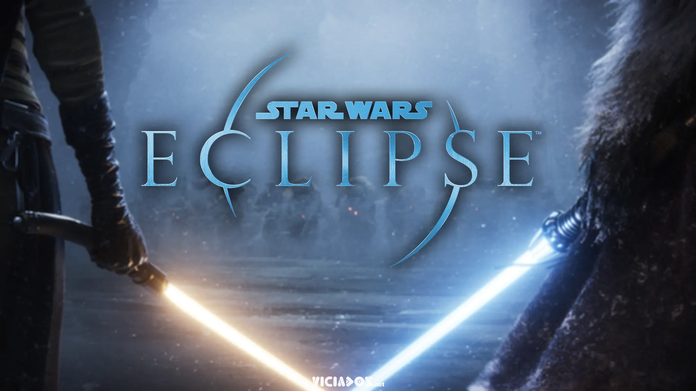
Um novo jogo de Star Wars no estilo narrativo de Detroit: Become Human.
8. Final Fantasy VII Rebirth Part 3 (Square Enix)
Plataformas: PS5 (possivelmente outras plataformas mais tarde)
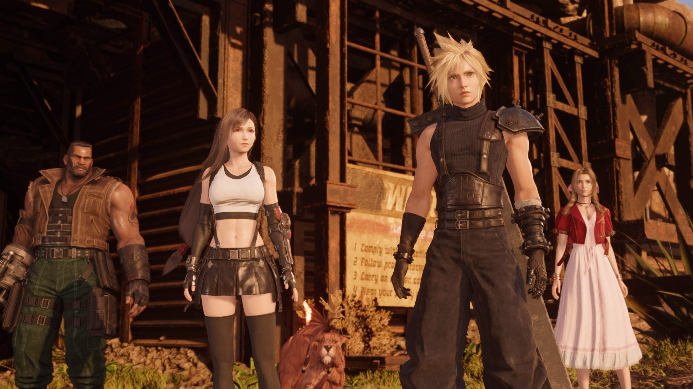
A conclusão da trilogia de FF7 Remake, com novos rumos para a história de Cloud e Sephiroth.
9. Avowed (Obsidian Entertainment / Xbox Game Studios)
Plataformas: Xbox Series X/S, PC
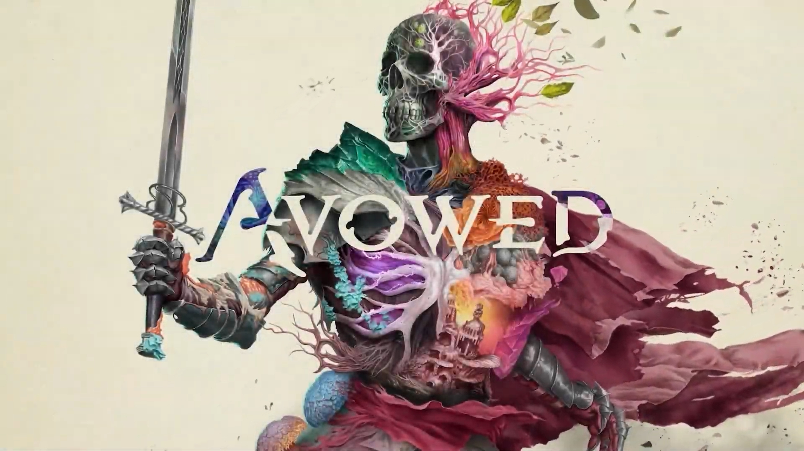
Um RPG de mundo aberto no universo de Pillars of Eternity, com combate em primeira pessoa.
10. Metroid Prime 4 (Nintendo / Retro Studios)
Plataformas: Nintendo Switch (ou Switch 2?)
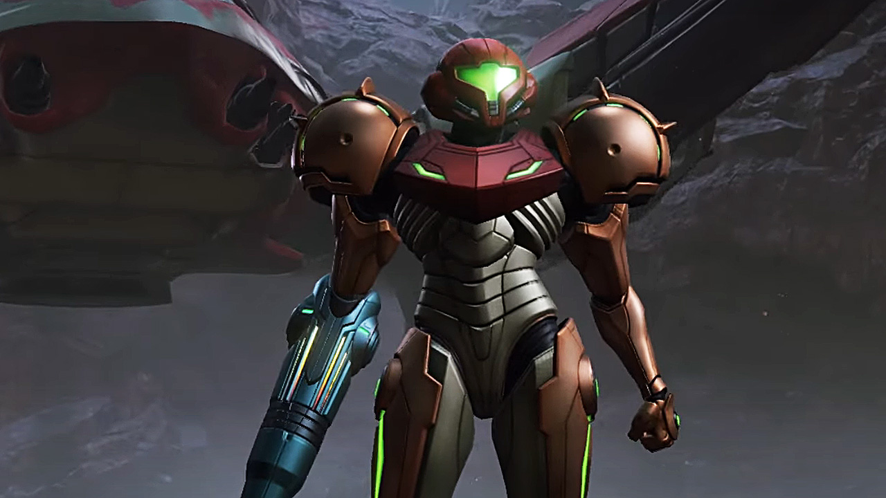
O tão esperado retorno de Samus Aran em um FPS de exploração e ação.
Um jogo de ação e vampiro em primeira pessoa, desenvolvido pelos criadores de Dishonored e Deathloop.
4. Fable (Playground Games / Xbox Game Studios)
Plataformas: Xbox Series X/S, PC
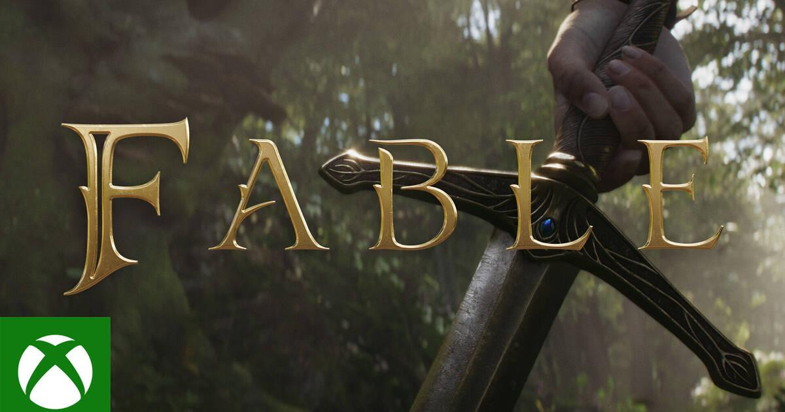
O reboot da clássica série de RPG com um toque de humor e mundo aberto fantástico.
5. Death Stranding 2 (Kojima Productions)
Plataformas: PS5
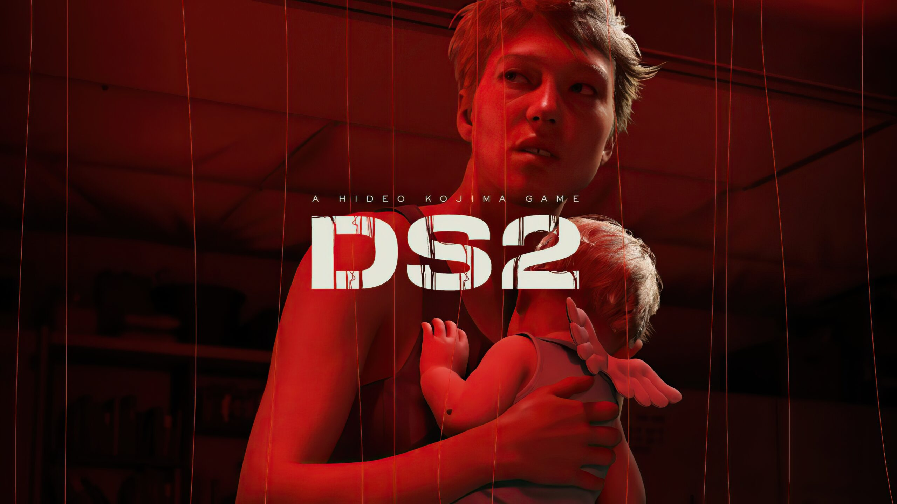
A sequência do aclamado jogo de Hideo Kojima, com mais mistério, ação e conexões sociais.
6. Dragon Age: Dreadwolf (BioWare / EA)
Plataformas: PS5, Xbox Series X/S, PC
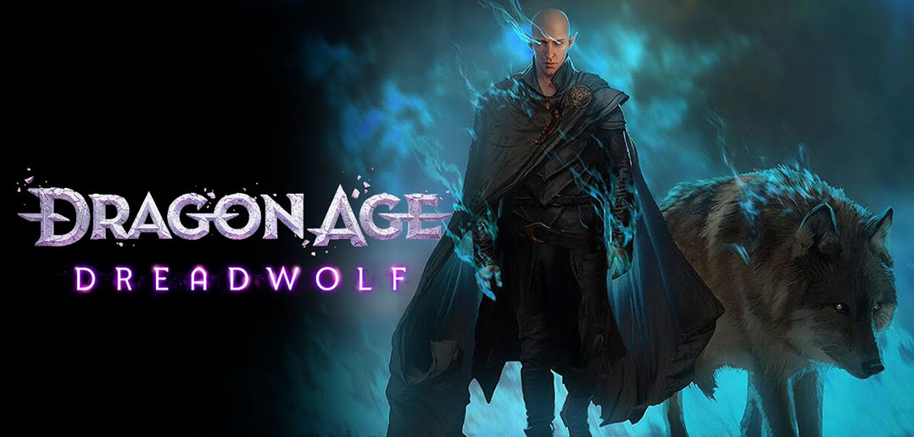
O retorno da série de RPG de fantasia da BioWare, focado em escolhas impactantes e combate tático.
7. Star Wars: Eclipse (Quantic Dream)
Plataformas: PS5, Xbox Series X/S, PC
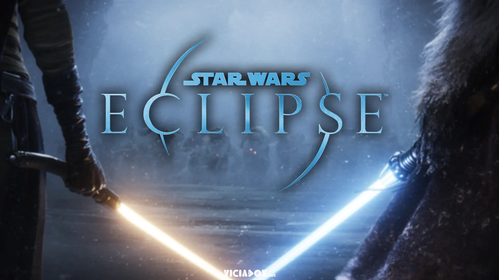
Um novo jogo de Star Wars no estilo narrativo de Detroit: Become Human.
8. Final Fantasy VII Rebirth Part 3 (Square Enix)
Plataformas: PS5 (possivelmente outras plataformas mais tarde)
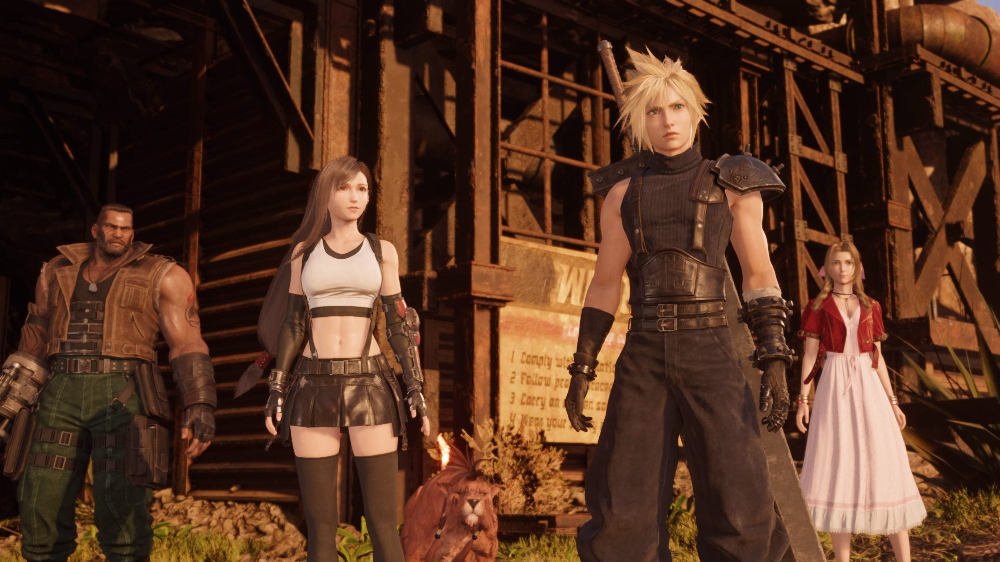
A conclusão da trilogia de FF7 Remake, com novos rumos para a história de Cloud e Sephiroth.
9. Avowed (Obsidian Entertainment / Xbox Game Studios)
Plataformas: Xbox Series X/S, PC
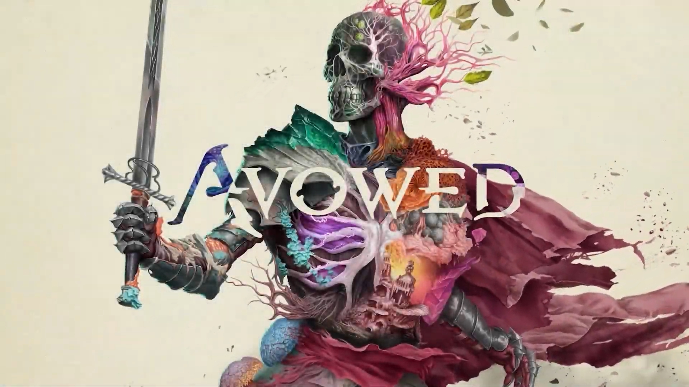
Um RPG de mundo aberto no universo de Pillars of Eternity, com combate em primeira pessoa.
10. Metroid Prime 4 (Nintendo / Retro Studios)
Plataformas: Nintendo Switch (ou Switch 2?)
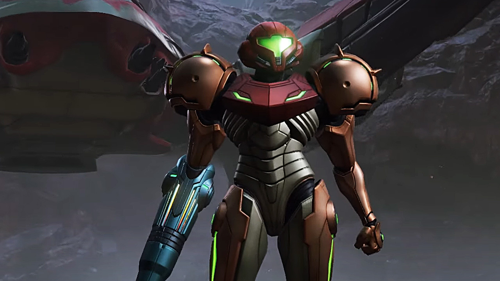
O tão esperado retorno de Samus Aran em um FPS de exploração e ação.
.png)